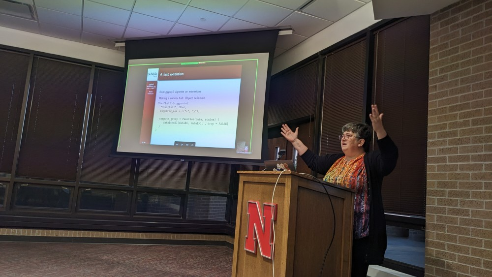
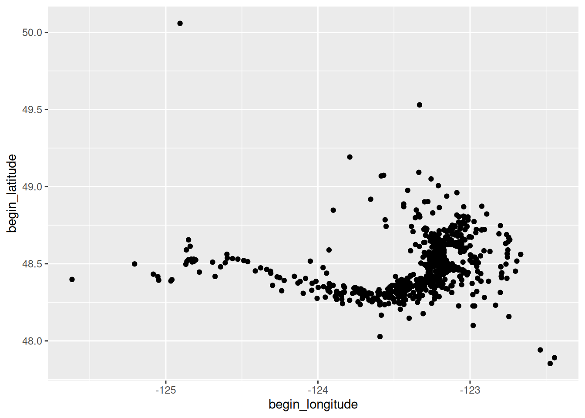
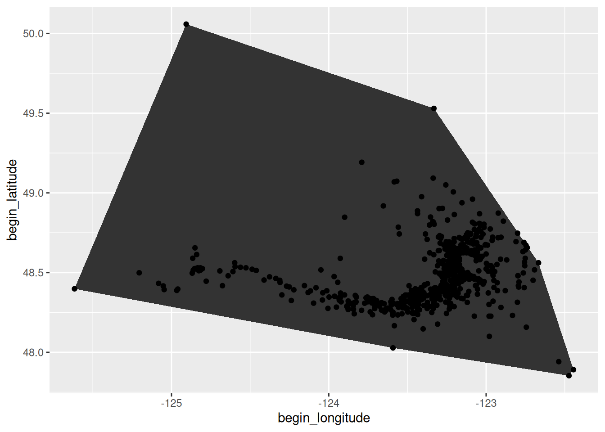
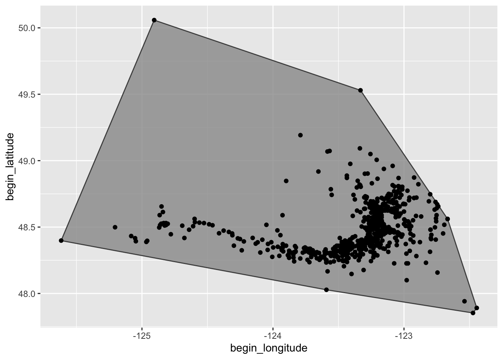
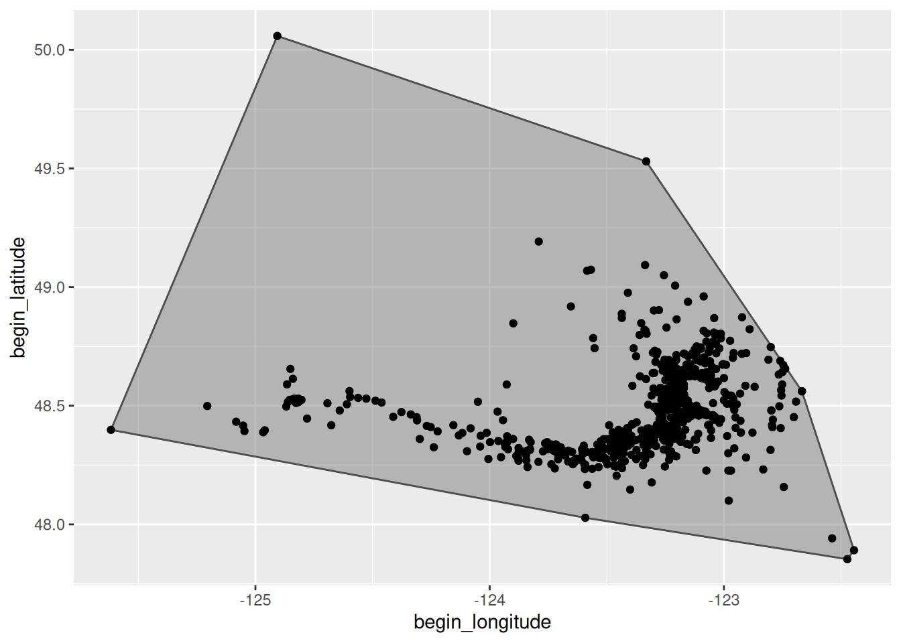
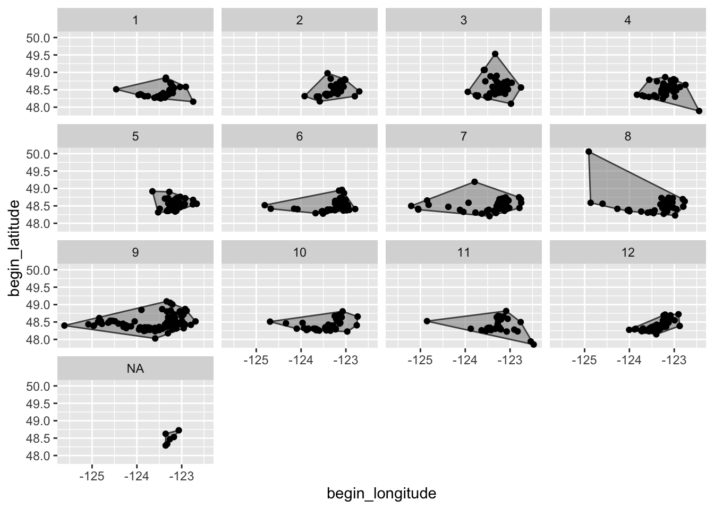
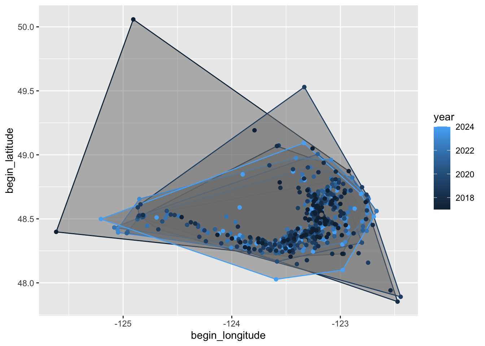

orcas <- readr::read_csv('https://raw.githubusercontent.com/rfordatascience/tidytuesday/main/data/2024/2024-10-15/orcas.csv')Extensions to ggplot2 are easy – right?
extensions
geoms
ggplot2
talk
Inaugural Nebraska R User Group talk given by Dr. Heike Hofmann.
On December 4, Dr. Heike Hofmann gave the inaugural Nebraska R User Group talk on “Extensions to ggplot2 are easy – right?” (slides). Many of us have used the {ggplot2} package to plot our data. But have you ever wanted to create new ways of plotting data that weren’t available? {ggplot2} is extensible, letting you create your own custom plotting functions. Dr. Hofmann walked us through how to do this.

Here are a few highlights.
Setting up the data
First, we need a good data set to work with. Dr. Hofmann recommended check the #TidyTuesday website for data sets. She chose to use the Southern Resident Killer Whale Encounters data set, which tracks the location of orcas in the Pacific Northwest’s Salish Sea by the Center for Whale Research.
Let’s import the data from the #TidyTuesday data repository.
A quick plot of this data shows the locations of encounters:
library(ggplot2)
orcas |>
ggplot(aes(x = begin_longitude, y = begin_latitude)) +
geom_point()
Extending ggplot
But what if we want to draw a polygon around the perimeter of the data points to show the extent of the area covered by the data? In geometry, this is called a convex hull. There is not a function in {ggplot2} that automatically plots convex hulls. So we need to create our own extension to do this.
As a reminder, we use geoms to define how data are mapped to physical properties of the plots (e.g., points, lines, polygons, text). So above we used the geom_points() function to map the longitude and latitude data to x- and y-coordinates on our Cartesian coordinate system.
But for every geom there is a stat that computes statistics on the data before mapping to the plot via the geom. The stat underlying geom_points() is stat_identity(). The “identity” part just means that the raw data is passed directly to the geom (there are no actual computations run on the data).
Therefore, to create a new type of plotting function, we must create a new geom and a new stat. Fortunately, we don’t have to do these from scratch. We can modify existing geoms and stats. So it makes sense to find the existing geom that is closest to what you want to do, and modify that.
To plot a convex hull, we must first find the hull, which means finding the points that represent the corners of the hull. So our new plotting function must find a subset of points and then plot a polygon connecting those points.
Creating stat objects and functions
Before we create a new stat function, we have to create a new stat object that computes the convex hull. Fortunately, there is a function for that (grDevices::chull()) that we can embed in our stat object. So here we use ggproto() to create a new object based on the prototype stat that computes for each group the subset of data points that represent the convex hull.
StatChull <- ggproto(
"StatChull", Stat,
required_aes = c("x", "y"),
compute_group = function(data, scales) {
data[chull(data$x, data$y), , drop = FALSE]
}
)Now we need to create the stat function. Because we need the function to draw a polygon based on the convex hull points, we will use the polygon geom as the base for this function. We include a layer() function and keep most of the rest of the arguments this same to avoid messing up all of the automatic benefits we get of using the polygon geom.
stat_chull <- function(
mapping = NULL, data = NULL, geom = "polygon",
position = "identity", na.rm = FALSE,
show.legend = NA, inherit.aes = TRUE, ...) {
layer(
stat = StatChull, data = data, mapping = mapping, geom = geom,
position = position, show.legend = show.legend,
inherit.aes = inherit.aes, params = list(na.rm = na.rm, ...)
)
}We can now use our new stat_chull() function two draw the convex hull around the data.
orcas |>
ggplot(aes(x = begin_longitude, y = begin_latitude)) +
stat_chull() +
geom_point() 
We have drawn a convex hull! But the fill and transparency defaults aren’t great. Fortunately, we can pass standard aesthetic arguments to the function to control line color and polygon fill and transparency.
orcas |>
ggplot(aes(x = begin_longitude, y = begin_latitude)) +
stat_chull(fill="grey60", colour = "grey30", alpha = 0.8) +
geom_point() 
Creating geom objects and functions
But if we want to set different defaults from the original geom (in this case polygon), we also need to set up our own geom object and function. We will create a new geom object called GeomChull based on the prototype object GeomPolygon. Then we’ll define new aesthetic defaults.
GeomChull <- ggproto(
"GeomChull", GeomPolygon,
default_aes = ggplot2::aes(
colour = "grey30", fill = "grey50", alpha = 0.5, # new ones
linewidth=0.5, linetype = 1, subgroup=NULL
)
)With the new geom object in place, we need to create a new geom function that uses the chull stat that we created and the GeomChull object.
geom_chull <- function (mapping = NULL, data = NULL,
stat = "chull", position = "identity",
rule = "evenodd", ..., na.rm = FALSE, show.legend = NA, inherit.aes = TRUE)
{
layer(data = data, mapping = mapping, stat = stat,
geom = GeomChull, position = position,
show.legend = show.legend, inherit.aes = inherit.aes,
params = list(na.rm = na.rm, rule = rule, ...))
}Now we can use geom_chull() instead of stat_chull() and we have a new set of default aesthetics.
orcas |>
ggplot(aes(x = begin_longitude, y = begin_latitude)) +
geom_chull() +
geom_point() 
Bonus side effects
Again, because we left so many of the arguments the same, we can do cool things like automatically have the function apply to facets.
orcas |>
ggplot(aes(x = begin_longitude, y = begin_latitude)) +
geom_chull() +
geom_point() +
facet_wrap(~lubridate::month(date))
Or apply the function to groups.
orcas |>
ggplot(aes(x = begin_longitude, y = begin_latitude,
colour = year, group = year)) +
geom_chull() +
geom_point() 
Other extensions
See—we told you extensions to ggplot2 would be easy – right? For other ggplot2 extensions that folks have created, check out the ggplot2 extensions gallery, which includes extensions such as {ggmosaic}, {ggpcp}, and {ggrepel} just to name a few!